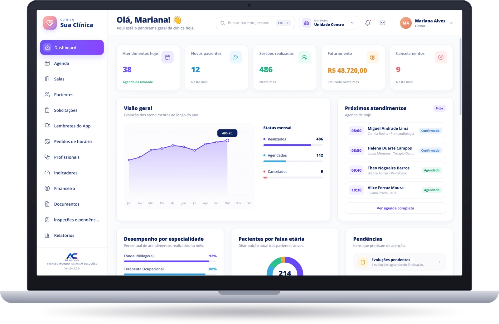
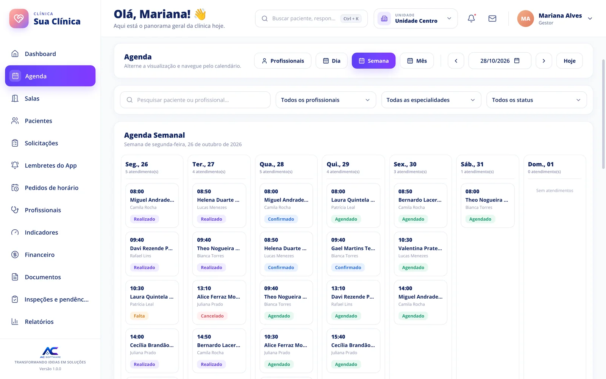
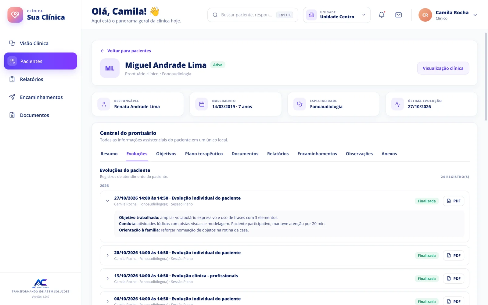
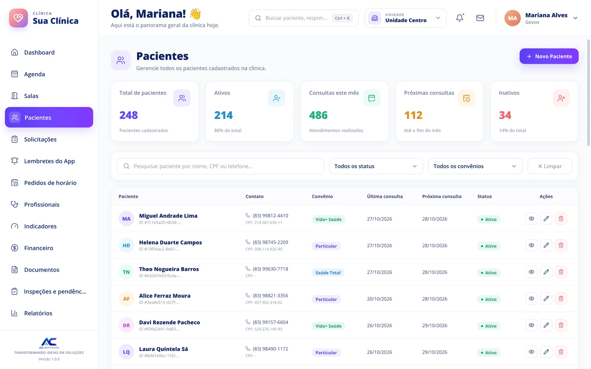
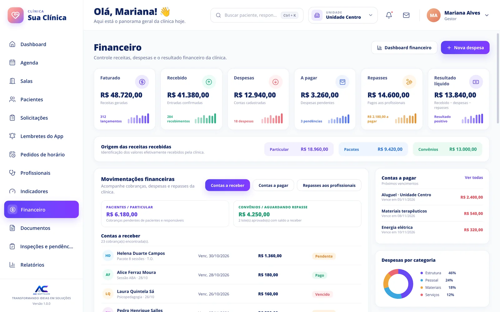

Para clínicas multidisciplinares
Sua clínica, sua marca. A gestão é com a gente.
Agenda, prontuário, evoluções e financeiro num só sistema, entregue com o nome, a logo e as cores da sua clínica.

Apresentação
Veja o sistema em 30 segundos
Sua marca
Para a equipe e para os pacientes, é o sistema da sua clínica.
Onde nas telas aparece "Sua Clínica", entra o nome da clínica que contrata. A tecnologia é nossa; a identidade é sua.
Nome e logo da clínica
No menu, no login e nos documentos gerados em PDF.
Cores da sua identidade
A arte do sistema combina com a marca que seus pacientes já conhecem.
Uma ou várias unidades
Troque de unidade no topo da tela e veja agenda, salas e números de cada uma.
Recursos
Da recepção à gestão, tudo conversa entre si.
Dashboard
A clínica inteira num painel
Atendimentos do dia, novos pacientes, sessões realizadas, faturamento e cancelamentos assim que você entra.
- Evolução dos atendimentos ao longo do ano
- Desempenho por especialidade e pacientes por faixa etária
- Pendências, como evoluções a finalizar


Agenda e salas
Todos os profissionais, todas as salas, sem conflito
Veja por dia, semana, mês ou por profissional. Filtre por especialidade e status e acompanhe cada atendimento.
- Agendado, confirmado, realizado, falta e cancelado
- Controle de salas e bloqueio de horários
Prontuário
Tudo sobre o paciente em um único lugar
A central do prontuário reúne evoluções, objetivos, plano terapêutico, relatórios, encaminhamentos, observações e anexos.
- Evolução por sessão, com objetivo, conduta e orientação à família
- Evoluções em PDF com um clique
- Responsável do paciente sempre à vista


Pacientes
Ativos, inativos e próximas consultas de relance
Busque por nome, CPF ou telefone, filtre por status e convênio e veja a última e a próxima consulta de cada paciente.
Financeiro
Do faturado ao resultado líquido, com repasses
Faturado, recebido, despesas, contas a pagar e repasses aos profissionais, chegando ao resultado real da clínica.
- Receitas por origem: particular, pacotes e convênios
- Contas a receber, a pagar e vencimentos
- Despesas por categoria

Acesso por perfil
Cada pessoa vê o que precisa para o seu trabalho.
Gestão
Visão completa: indicadores, financeiro, profissionais, salas e relatórios.
Profissional
Visão clínica: seus pacientes, prontuário, evoluções, encaminhamentos e documentos.
Recepção
Agenda, cadastro de pacientes e a rotina do dia a dia.
Quer ver o sistema com a cara da sua clínica?
Mande sua logo e a gente mostra como fica. Também cuidamos da migração dos dados do sistema que você usa hoje.